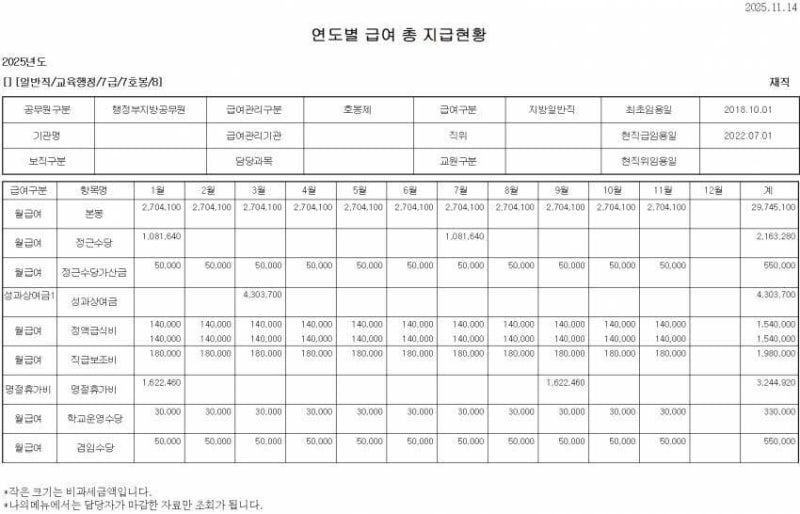
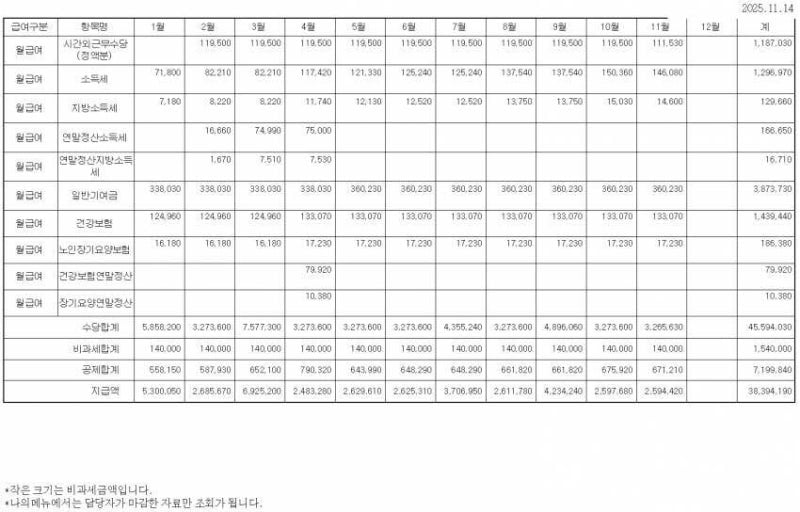
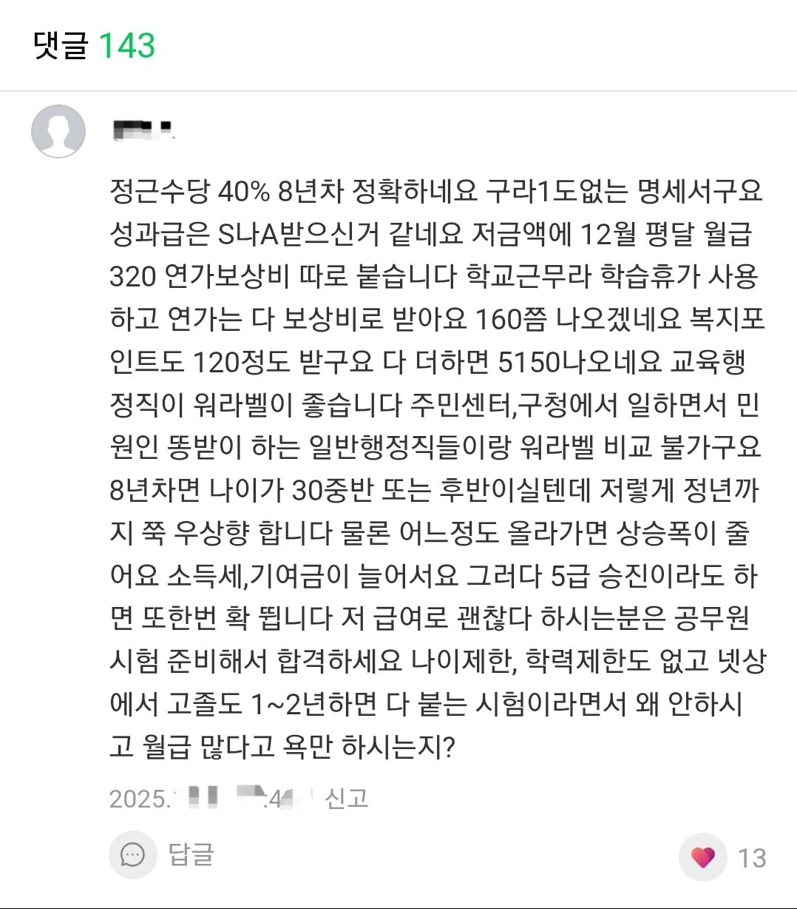

9출 공무원
1년 내내 초과근무 없이
오후 4시30분 칼퇴
8년차 연봉 5,000
커뮤에서 연봉 한참 낮다는 인식이 많은데 생각보다 훨씬 높음 ㄷㄷ



9출 공무원
1년 내내 초과근무 없이
오후 4시30분 칼퇴
8년차 연봉 5,000
커뮤에서 연봉 한참 낮다는 인식이 많은데 생각보다 훨씬 높음 ㄷㄷ
좆방직은 금년도도 경쟁률 좆밖겠네.나를 구원해줄 국가직 행님없나? 나라일터에서 고용노동부행님들에게도 러브콜보내는데 답변도않옴 ㅋㅋㅋ
20살 공무원 테크가 역시 최상이군
크게 뭔가 재능없으면 고딩때 공무원 준비가 킬포인듯
이새끼들은 점점 원기옥되는데 징징되네16년차되면 주위에 자기만큼 편하게 월급 받는 사람없다는거 알아도 징징댐
저 제일아래 계란에있는 3800이 뗄거 다 뗀 실수령금액인거지?
잘아네. ㅋㅋㅋ 근데 쉽게들어올려면 지금 좆방말고는 없음
호봉올라갈수록 더 뜀 교사는 더더더 뛰고
어딜 갓티쳐님들이랑 비교를 이미 처음인정호봉부터 다른분들인데.
왜 교사는 더더더 뛰어?
교사는 승급개념이 없음
8년차인데 9급? 본인이 원하면 진급 안 할 수 있음?
9급이 아니라 9급 출신
사람에게는 얼마의 돈이 필요할까
욕심만큼
제일 무서운건 50대가 되어도 꾸역꾸역 연봉 오른다는거임
안오름
급수에 따른 호봉 상한이 있어서
급수에따른 호봉 상한 되기전에 보통 다 퇴직하지않나..?
부럽다
그건 아님
왜지용
8급 5호봉 작년 4400이였는데;
20 살에 9 급 공무원 하라고 추천함
30 살에 하면 별론데
20 살때 하면 좋음
어리면 갑질에 조금더 잘버팀
짬차면 나보다 나이 많은 후임도 들어 오고
평균입직연령이 만29세라서 사실상 20대까지는 괜춚
전처가 9급 출신 10년래서 7급달았기 때문에 급여 잘 아는데 공무원 박봉이라는거 개씹 헛소리임
온국민들이 사장임ㅋㅋ
박봉이라고 볼멘소리 나오는 건
초임때 좆같이 적게 나와서 그런 것도 있고
업무마다 직렬마다 편차가 존나큰데
연장급여도 제대로 안주고
급여차이도 없으니까 그렇지
불만 가지면 누칼협 ㅇㅈㄹ 떠는데
그렇게 따지면 니들 직장인들도 불만 얘기하면 안되지
급여는 둘째치고 65살까지 안정적으로 자기가 하던일 그대로 할수있다는게 개씹메리트임..
자영업같은거 안건들여도 되고..
제기랄 또 교행이야